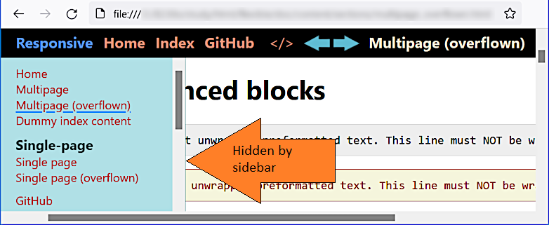
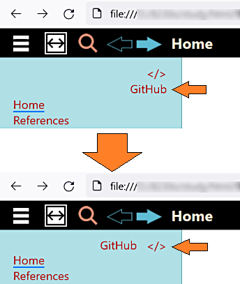
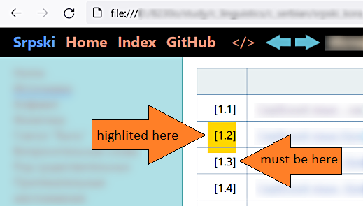

HomeDarkIndex
HomeDarkIndex GitHub
</>
GitHub
</>


Attempt of creating responsive documentation design.
[1], [2], [3], [4], [7], [8], [9]
The solution works much better that it did. But it needs more study of HTML flexible design implementation.
The responsive behavior is implementing by adding:
<meta name="viewport" content="width=device-width, height=device-height, initial-scale=1.0, minimum-scale=1.0">Consider he best practices in activating and deactivating of the sidebar. Now it's done using JavaScript but probably pure CSS would be better. Also see [6].
Look at the admonition problem:

When content is scrolled horizontally, it's hidden behind the sidebar:

Implement tables horizontal scrolling. It may be easily done by adding the following CSS properties:
table {
display: block;
overflow-x: auto;
}Also need to restore the setting for some other tables, like this:
table.sidebarAligner {
display: table;
}This works and there are no problems spotted by now, but there are opinions against this, see: [10], [11], [12], [13]. In sort:
Setting
display: blockon a table body will strip the table of semantics and thus is not a good solution due to accessibility issues.
The best way is wrapping every table into a <div> and applying the display and the
overflow-x property to this DIV, but this needs patching the Markdown engines both in the
Python and the Java versions.
Drop down menu is not scrolled if exceeds the page height:

Also see [5].
Would be good to place the sidebar links like "Source text" and "GitHub" in one line:

Existing styles
a[name], a[id] {
height: 42px;
display: block;
margin-top: -42px;
}don't allow targeted links highlight:
a[name]:target, a[id]:target,
h1[id]:target, h2[id]:target, h3[id]:target,
h4[id]:target, h5[id]:target, h6[id]:target {
background-color: #fff9dc;
}
Also see SO: CSS- Highlight a div when the id is linked to using an anchor?.